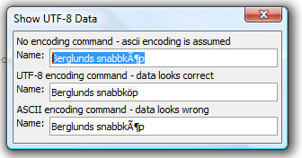

Working with UTF-8 Data
Post V10, all data that is retrieved from SQL databases using AlphaDAO is in UTF-8 format. If your data does not have any foreign characters in it, then this change will not have any consequences for you. However, if your data does have foreign characters in it, and you want to display the data in an Xdialog, you will need to use one of the available options to convert the data into ansi format.
The options are:
- Before you display data in an Xdialog, convert the data from UTF-8 to ansi using the convert_utf8_to_ansi() function.
- Or alternatively, in the Xdialog, before displaying UTF-8 data use the {encoding=utf8} command to automatically convert the data before it is displayed.
The following Interactive window session shows how UTF-8 data will look before, and after it is converted to ansi format:
(The convert_utf8_to_acp() function is used. There is also a convert_ansi_to_utf8() function.)
dim cn as sql::connection
?cn.open("{A5API=Access,FileName='C:\a5v10\MDBFiles\Northwind.mdb',UserName='Admin'}")
?cn.Execute("select * from customers where customerId = 'bergs'")
= .T.
rs = cn.ResultSet
x = rs.data("companyname")
?x
= "Berglunds snabbköp"
?convert_utf8_to_acp(x)
= "Berglunds snabbk�p"
The following Xdialog shows how the {encoding} Xdialog command can be used:
dim cn as sql::connection
cn.open("{A5API=Access,FileName='C:\a5v10\MDBFiles\Northwind.mdb',UserName='Admin'}")
cn.Execute("select * from customers where customerId = 'bergs'")
rs = cn.ResultSet
x = rs.data("companyname")
ui_dlg_box("Show UTF-8 Data",<<%dlg%
No encoding command - ascii encoding is assumed;
Name: .50x;
UTF-8 encoding command - data looks correct;
{encoding=utf8}
Name: .50x;
ASCII encoding command - data looks wrong;
{encoding=ascii}
Name: .50x;
%dlg%)
